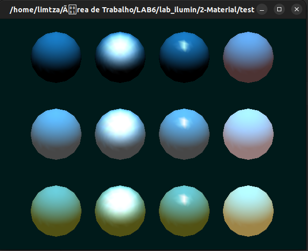

O Laboratório visa executar os projetos, e verificar os conceitos apresentados sobre: iluminação e shading.
Laboratorio 06 - Iluminação e Shading
Atualizado em 17/11/2022 ás 19:00
Iluminação e Shading
Atividades de Aula
Quais os valores de propriedades da fonte de luz?
As propriedades da fonte de luz foram determinados através de vetores que define a posição e a cor RGB da luz emitida de acordo com a imagem abaixo:
O que foi habilitado no modelo de iluminação?
Para especificar a intensidade RGBA de uma luz ambiente global, foi utilizado o parâmetro GL_LIGHT_MODEL_AMBIENT da seguinte forma: GLfloat lmodel_ambient[] = { 0.4, 0.4, 0.4, 1.0 };esses números define uma pequena quantia de luz ambiente branca, mesmo que não seja adicionada uma fonte de luz específica na cena, os objetos ainda podem ser vistos na cena. Além disso, foi habilitado o Ponto de Visualização Local Infinito: glLightModeli(GL_LIGHT_MODEL_LOCAL_VIEWER, GL_TRUE); Este comando posiciona o ponto de visualização no infinito, passando 0 como argumento.
Quais os objetos desenhados?
O objeto desenhado é um toroide com um pequeno cubo no centro.
Como varia a posição da fonte de luz no programa:
A luz varia quando o botão esquerdo do mouse é pressionado e a luz varia com a variação da posição do cubo circundando o toroide.
Exercícios para Entregar
Análises e conclusão
Utilizando os conceitos aprendidos na disciplina e modificando o código fonte fornecido em aula para a aplicação desses conceitos, foi possivel aprofundar os fundamentos de iluminação e shading utilizando a linguagem C++ e a biblioteca OpenGL.
Códigos fonte